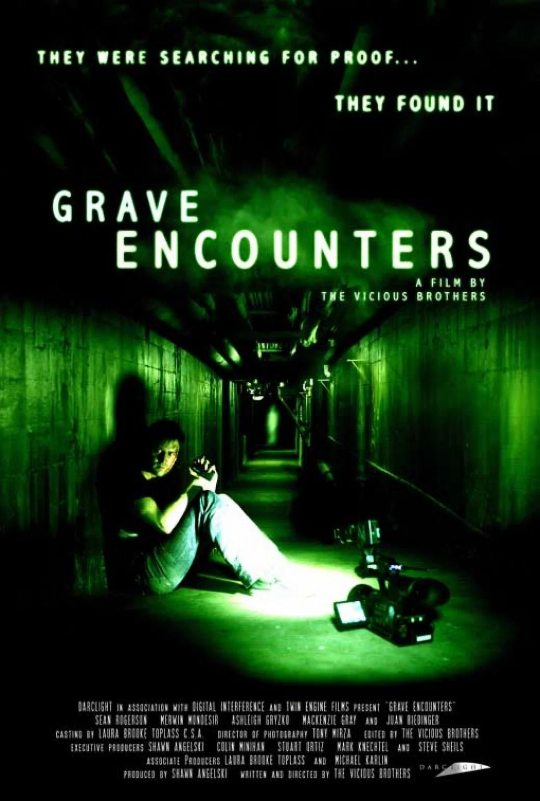

What if you found out that the world as you know it was a lie? That nothing around you; your job, home, city, or even planet was how you believed it to be? And then what if you had a chance to escape that world. Would you take it and set yourself free, or do you choose to stay blind and pretend that nothings wrong?

This masterpiece of an anime film from Studio Ghibli takes us on a journey to another world where anything is possible. It ask the questions: How far would you go to save your family? How much do you love them? What would you risk to save them?This movie is shot from the point of view of a child trapped in another world, initially thought to be a theme park, when her parents are kidnapped and only she can save them and herself.
A group of fake ghost hunters get more than they bargained for when they travel to an abandoned asylum for their ghost hunting tv show. The host Blake is in dire need of filming some real ghost to prove they aren't frauds. The grounds keeper lets them in and promises to return in the morning to let them out, but they quickly find that time works differently in the asylum, day never arrives, and they aren't alone.